Game Engine Export
{kind=link}
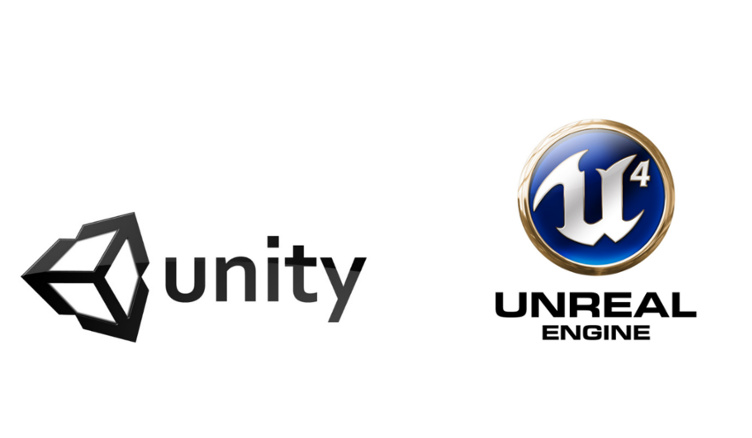
{kind=link}
Important
Unreal Engine: UE 5.5+ does not import the bind pose properly (previous versions do work).
Overview
Once the character is rigged and skinned, select its armature and go to File > Export > Auto-Rig Pro FBX/GLTF
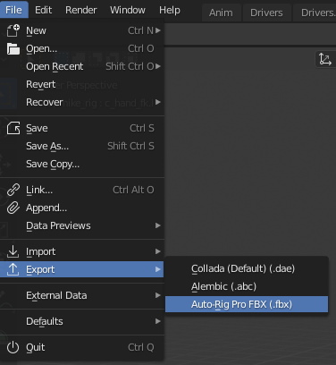
2 types of skeleton can be exported: Humanoid for human characters, Universal for any skeletons
Format: FBX or GLTF
Note
GLTF requires Bender 3.4 and higher
Currently, UE 5.5 does not import GLTF morph targets/shape keys
Although it’s not officially supported, it’s still possible to export to other formats by importing back the file in Blender, and exporting with built-in Blender exporters (DAE for example)
Shape keys are exported, with option to apply them on top of existing modifiers.
Full support in Unity, Unreal Engine (FBX), Godot (FBX, GLTF), and probably other game engines supporting these formats as well.
Export Requisites
Scale
Ensure the character is not too small, otherwise it may lead to issues, such as bad retargeting. Try to consider one meter = one grid unit, ideally it has to be approximately this big compared to the grid floor (see screenshot below). Scale the mesh and armature (S key otherwise).
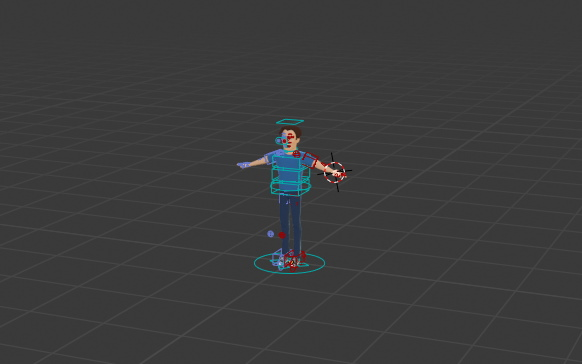
Make sure that the scene Unit Scale is normalized to one:
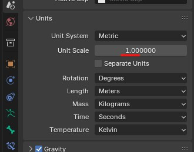
Custom Bones
Custom Bones (new bones created in the rig manually, such as clothes, hair, props…) are not exported by default. To export them, they must be tagged as custom bones:
Select the custom bones and click the dedicated button:
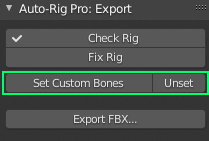
Or, their name must starts with ‘cc_’ (stands for custom controller, e.g. ‘cc_sword’).
Or, tag them with a ‘cc’ or ‘custom_bone’ property, by adding a custom property to the bone
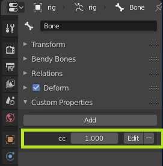
If they are parented to an FK bone, they will be parented to the deforming bone automatically at export time. E.g, if “cc_watch” is parented to “c_forearm_fk”, it will be parented to “forearm_stretch” which is the final deforming bone in the exported armature. If “cc_hat” is parented to “c_head.x”, it will be parented to “head.x”. Make sure to parent them directly to the “_stretch” bones when using an IK chain which has no direct controllers, such as “forearm_stretch”.
Stretch - Scale
Stretch/scale of the arms and legs bones is not properly handled by the Fbx format, since the children bones always inherit the scale from their parent bones, and this is leading to rotation issues when scaling axes non-uniformly. For this reason, the stretch features must either be disabled or use additional tricks:
No stretch:
Make sure to set to zero the Auto-Stretch and Stretch Length values of the arms and legs, and do not move the c_stretch controllers (elbows, knees).
If stretchy bones are required:
Use the No Parents feature, see Export Settings, to flatten the exported skeleton hierarchy (bones are not parented)
Or, use the Soft-Link feature. Select deforming bones that should be stretched (for example arm bones) and click Set Soft-Link Bones. This will preserve bones scaling to 1 (no scale), while keeping their actual stretched position. This especially works well with multiple twist bones (more than 2), it gives the illusion that bones are scaled, while they are not.
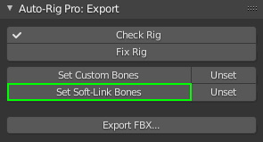
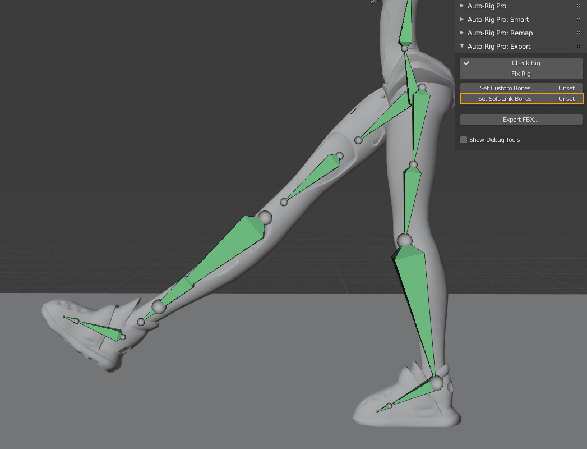
Preserve Volume
In game engines, dual quaternions skinning is generally not supported, unlike Blender does with the “Preserve Volume” feature in the armature modifier. So make sure to uncheck Preserve Volume in the armature modifier in Blender to see the right deformations.
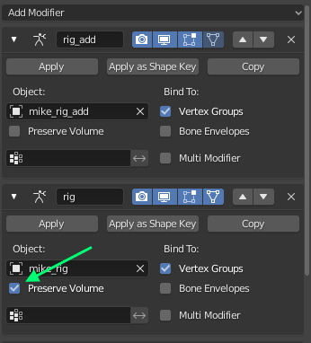
It may be best to use multiple twist bones for the arms and legs, see Arm Options
Shape Keys
If a single animation is exported, it is possible to simply keyframe the shapes.
However, the best practice is to create custom properties. In example, for facial shape keys, create them on the head control (c_head.x), and setup drivers so that the properties drive the shape keys values (for example a property “smile” drives the “smile” shape key value). Right click the property > Copy as New Driver, then right click the shape key value > Paste Driver.
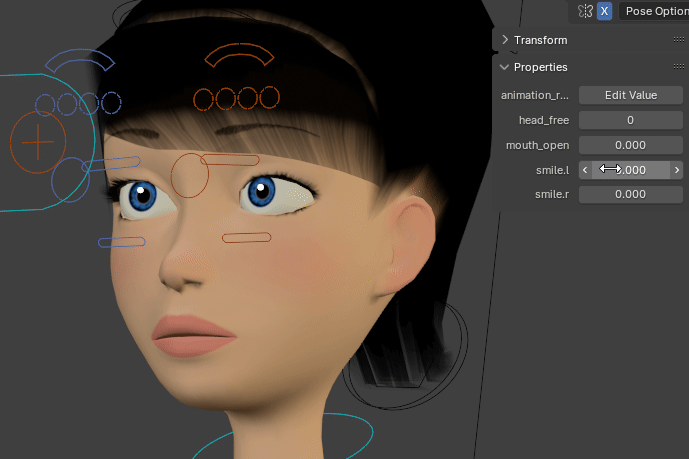
Root Motion
Unity Humanoid
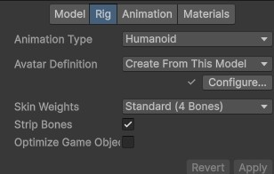
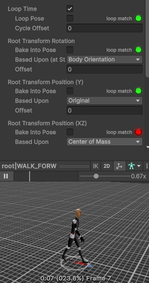
Unity Generic and Unreal Engine
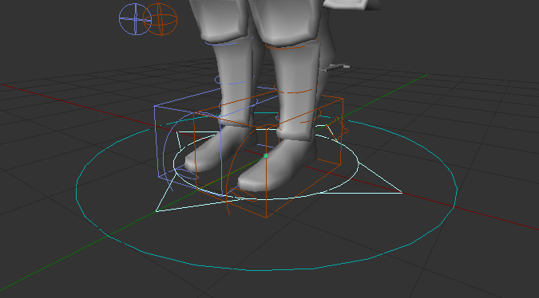
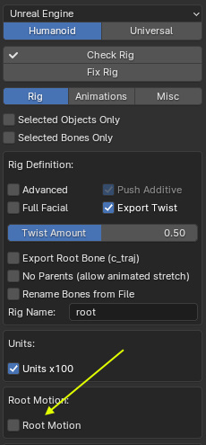
Enabling Root Motion in Unity (Generic): Set Root Node to “root” in the import settings. There used to be other settings to select a custom root bone in option, but in recent Unity version -2023 and higher- it seems broken.
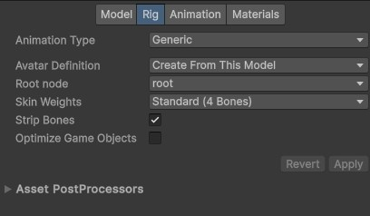
Enabling Root Motion in Unreal Engine: Tick EnableRootMotion in the Animation window/ Asset Details:
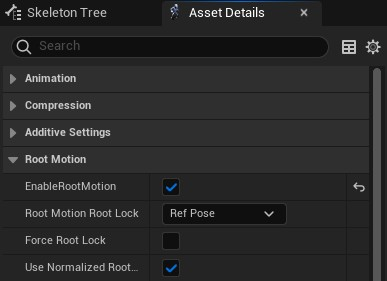
Godot
To export root motion for Godot, make sure to enable Export Root Bone (c_traj) and Godot Root Axes in the export settings.
Root Motion Extraction

To extract the c_traj motion from an animated rig, see Extract Root Motion.
Free Root Motion
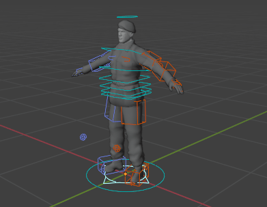
By default, the IK feet and hips (c_root_master.x) controllers are parented to the c_traj bone. Animators may prefer to unparent them, so that c_traj can move independently. To do so:
Select the IK feet bones (c_foot_ik) and set their Child Of constraint influence to 0.
Same for the IK poles (mute constraint if the influence is driven).
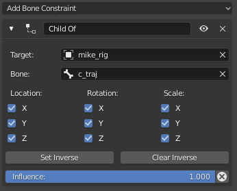
Select the c_root_master.x bone, enter Edit Mode (Tab key), clear its parent bone.
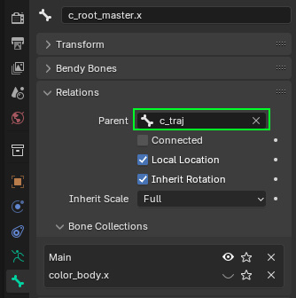
Then select a spine reference bone, and set the Parent Fallback to nothing in Limb Options, instead of c_traj. This way, the parent won’t reset to c_traj when Match to Rig.
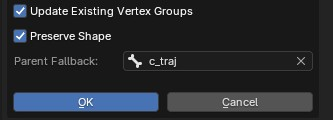
In option, you can add a Child Of constraint to c_root_master.x with c_traj as target, in order to let the animator decides if he needs to free the c_traj, on the fly, since constraints are animatable.
Constrained Root Motion
After freeing the c_traj hierarchy as explained above, animators may also prefer automatic tracking of the “c_traj” position using a constraint:
Add a Copy Location constraint to c_traj, with the rig and root.x bone as target
Disable Z axis to keep it on the ground level
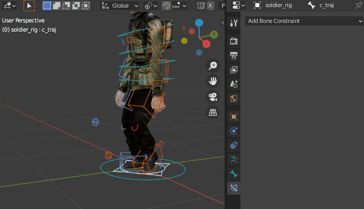
Custom Master Bones
Sometimes, the game engines may require a specific skeleton hierarchy, with a dedicated root/master bone at the base.
For example:
MyRootBone L pelvis L spine...
If that is the case for you, follow these guidelines. By default, Auto-Rig Pro will not export the c_pos and c_traj master controller, looking like this in the Blender scene:
c_pos
L c_traj
L c_root_master.x
L c_spine_01.x...
To add a custom master bone that will be exported to Fbx, create a new bone (Edit mode > Shift A) and insert it in the hierarchy after the “c_traj” bone:
c_pos L c_traj L MyRootBone L c_root_master.x...
Note that it’s also necessary to replace the target bone in the “c_foot_ik” and “c_hand_ik” bones constraints, since “c_traj” is the default target bone.
Then make sure to select your custom master bone, and click “Set Custom Bones” to include it in the export.
Done, the exported hierarchy will be the following:
MyRootBone L pelvis L spine...
Animations Export
Actions
In Blender, animations are called “actions” and multiple actions can be created for a character. However, when exporting to Fbx, all actions contained in the file are exported by default, no matter if they’ve been created to animate the rig or other objects. Exporting actions that are not linked to the rig may potentially corrupt the character animation. To see why, open the Action window of Blender, and try to link other actions to the character. It may get distorted, scaled weirdly, depending on the keyframes stored in the action.
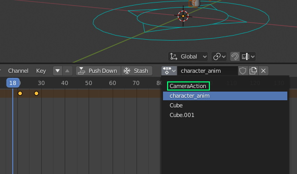
To fix it, in the export options, you can click the eye button to display the exported actions. Click the check boxes to enable or disable action export, or use “Only Containing” to filter by name.
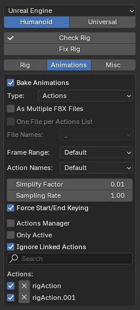
Actions Linker
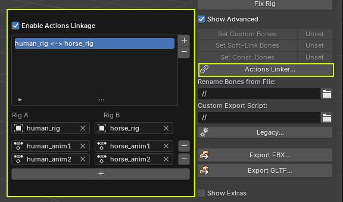
Example:
Click Actions Linker… (Show Advanced must be enabled)
Click the + button to add a new relation
Under the Rig A label, set the armature of the first character, and under Rig B, set the other armature.
Click the + button below to add Rig A’s action, and the corresponding Rig B’s action
Keyframes Interpolation
Bones animations are baked when exporting, one keyframe per frame, in order to export correct transforms out of the control rig that is driven with complex mechanics, constraints. The default keyframe interpolation is set to Linear by default, which interpolates smoothly from one frame to the next.
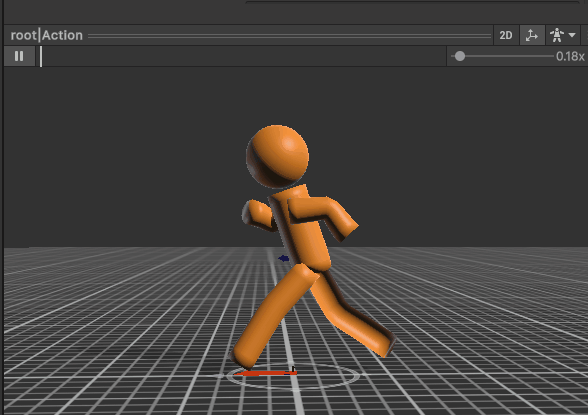
For blocky animation style (stop-motion like), Constant interpolation can be used instead of Linear. Constant interpolation is supported as a per-bone setting (applied to all animations for the given bones), via the Set Const. Bones button in the export menu, that is applied to all selected deforming bones.
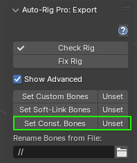
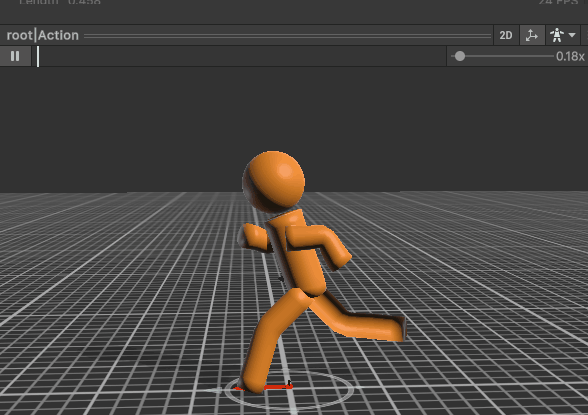
Check-Fix Rig
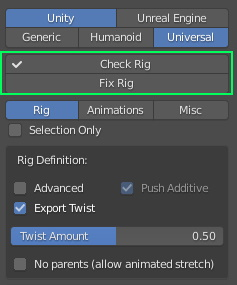
These tools are useful to identify and fix quickly possible problems with the rig, that would make it not compatible with export, especially bones stretch issues.
The Check Rig buttons only reports issues in a pop-up window, while the Fix Rig button will apply the following changes:
Disable all possible arms and legs stretches (c_stretch controller set to location 0, disable auto-stretch, set stretch length to 0…)
Disable the Preserve Volume option of the armature modifiers of skinned meshes, to show the actual exported deformations in Blender.
This may change somehow the result, then it’s recommended to check that animations still look good in the scene, and you can correct them if necessary.
Export Types
The dropdown list at the top allows you to select the target game engine:
Unity
Unreal Engine
Godot
Others
This hides or shows the export options dedicated to each engine.
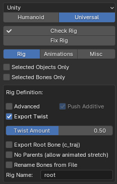
Below, the export rig type can be selected:
Universal: Exports the deforming skeleton for any creature: bipeds, quadrupeds, spiders, centaurs…
Humanoid: For human, bipeds rigs only. Exports the deforming skeleton, plus the following options:
Export basic or full facial bones. Automatic weights tranfer to the head if basic
Metacarpal fingers: include or exclude them from export. Automatic weights transfer to the hand if disabled
UE Mannequin bones axes orientation
UE Mannequin bones naming
UE Mannequin IK Bones
Godot Humanoid bones naming
Export Settings
Rig
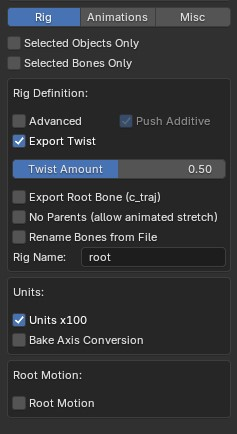
Selected Objects Only
By default, all skinned objects are exported. If enabled, only the selected ones will be exported. Useful if you only need to export animation data for example (select only the rig), or specific meshes (select the rig + meshes).
Selected Bones Only
By default, all deforming bones exported. If enabled, only the selected ones will be exported.
Full Facial
[Humanoid Only] Exports all facial bones, otherwise only the main ones are exported (jaw, eyes…) and facial bones weights that are not exported are transferred onto the head weights.
Advanced
Exports the bend/secondary bones (especially useful for cartoon characters to curve the arms, legs).
Note
Arms and legs Secondary Controllers are automatically exported if they’re set to Twist (see Secondary Controllers)

Push Additive
If Secondary Controllers are set to Additive mode, compensate the weight loss of the additive bend bones, since the additive armature is not exported.
Export Twist
Exports twist bones.
Twist Amount: A percentage can be defined to set the amount of twist. Generally 0.5 gives best results. This setting is only active if there is a single twist bone.
1.0
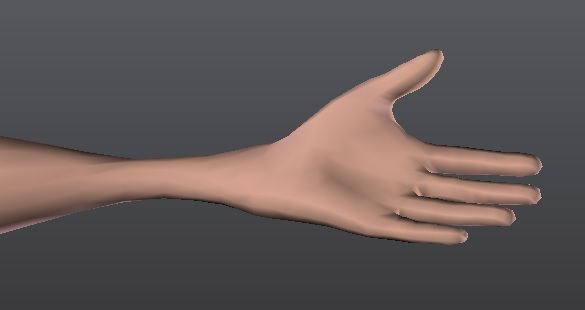
0.5
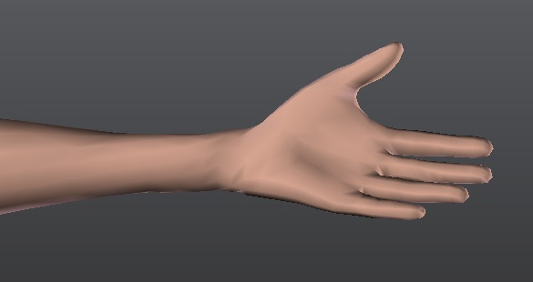
Note
Twist bones are automatically exported if there’s more than one twist bone per limb (see Arm Options, Leg Options)
Note
Unity internally handles the hand twist by twisting the forearm bone without using a dedicated twist bone, unless an additional script/plugin is used to handle the twist bone.
No Parents

Rename Bones
base_name (default export name) = new_name, one per line:
root.x = pelvis
spine_01.x = spine1
spine_02.x = spine2
...
This .txt file path must be set in the “Rename Bones from File” field in the Auto-Rig Pro: Export panel. If the text was written in the Blender’s Text Editor, enter the name of the text block here:
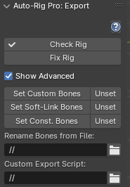
Custom Export Script
Example to print bone names:
import bpy
rig_export = bpy.context.active_object
print(rig_export.name)
bpy.ops.object.mode_set(mode='POSE')
for pb in rig_export.pose.bones:
print(pb.name)
Remove some bones from the skeleton:
import bpy
rig_export = bpy.context.active_object
to_delete = ['c_eye_target.l', 'c_eye_target.r']
bpy.ops.object.mode_set(mode='EDIT')
for bone_name in to_delete:
b = rig_export.data.edit_bones.get(bone_name)
rig_export.data.edit_bones.remove(b)
Note
The rig object name must not be changed with custom script. It’s defined by the Rig Name setting in the Misc tab. These custom instructions are “use it at your own risks”, they should be written carefully
Rig Name
Units x100
UE4 Legacy
[Unreal Only] Must be enabled when exporting to the older UE4 version. Metacarpal finger bones are not exported.
Rename for UE
[Unreal Only] Rename bones according to the Unreal Engine’s humanoid naming. Unity will handle the default names properly so this checkbox is not visible when Unity is chosen.
Mannequin Axes
[Unreal Only] Match the bones axes of the Unreal Mannequin. If enabled, allows to directly import the skeleton as the Mannequin skeleton in Unreal.
4 spine bones and 1 neck bone are required to match the UE4 Mannequin.
6 spine bones and 2 neck bones are required to match the UE5 Mannequin.
It’s also best to export the character in A-Pose when exporting to UE, see Changing the Rest Pose, but in latest UE versions, animation retargeting does not really depend anymore on the pose.
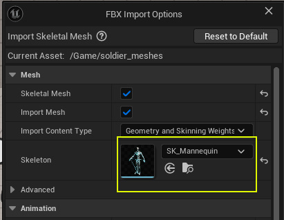
Root Motion
Transfer the “c_traj” bone animation to the armature object animation (root node in Fbx file) when exporting, in order to support root motion in game engines. See Root Motion requirements for more details.
Add IK Bones
[Unreal Only] Add the Unreal Mannequin IK bones: “ik_foot_root”, “ik_foot_l”,…
Animations
Bake Animations
Enable animation/action export. See Animations Export requirements for more details.
Type
Type of actions to export. Actions will export individual actions, while NLA will export a single animation for the whole scene as defined in the NonLinearAnimation editor.
As Multiple Fbx Files
To export one Fbx file per action
One File per Actions List
Frame Range
To define the frame range that will be exported for each action (start and end frames).
The Markers setting allows to export frames between two markers named “start” and “end” inserted at the desired frames in the action.
Important
Only works with “Action” markers. To convert Scene markers to Action, select them and click the Marker menu > Make Markers as Local
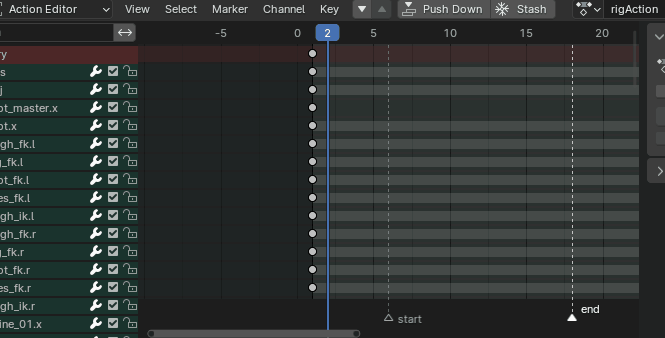
Action Names
Simplify Factor
Actions Manager
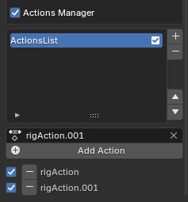
Only Active
To export only the current, active action linked to the rig.
Ignore Linked Actions
Search field
Actions can be included/excluded from export by ticking or unticking the boxes, and removed from the file by clicking the X button.
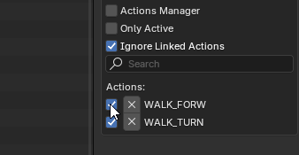
Misc
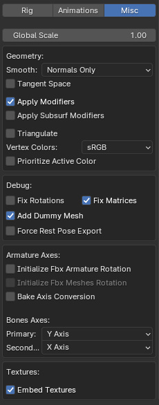
Global Scale
Apply a global scale to the exported character.
Warning
This may lead to issues in game engines, use it carefully. A safer option is to scale the armature and meshes manually before exporting.
Smoothing
Apply Modifiers
Warning
Modifiers are not allowed to change the amount of vertices on each frame, it must remain constant (such as a Bevel modifier that generate different vertices while the polygon angle is changing on each frame). If it does, the modifier will fail to apply when exporting.
Apply Subsurf Modifiers
Apply Subsurf modifiers when exporting.
Triangulate
Triangulate all polygons when exporting.
Vertex Colors
Set the vertex color space. Can be specific to game engines/shader used.
Fix Rotation
Add imperceptible jitter to bones position to avoid rotation issues when exporting animations. Should be enabled only when necessary in case of buggy rotations, due to an inaccurate decimal value in the transform matrix evaluation.
Fix Matrices
Add Dummy Mesh
Force Rest Pose Export
Initialize Fbx Armature Rotation
If the skeleton object has non-zeroed out rotations values in the game engine, and if this is a problem for your project, enable this setting.
Initialize Fbx Meshes Rotation
If the meshes objects have non-zeroed out rotations in the game engine, and this is a problem for your project, enable this setting.
Bake Axis Conversion
[Unity Only] Enables special axes and scale values when exporting, to comply with the Bake Axis Conversion attribute of Unity.
Bones Axes
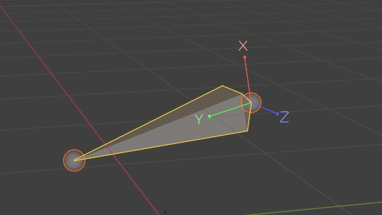
Embed Textures
Force textures to be embedded in the FBX file.
Important
May not work if shaders are different from a Principled BSDF shader, with simple textures connections.
Export by Script
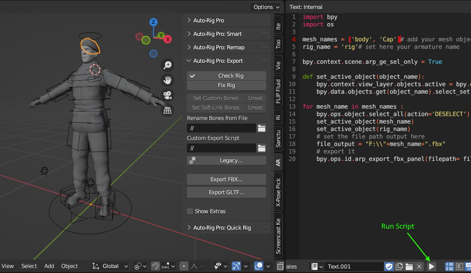
Export a character:
import bpy import os # set the file path output here file_output = "F:\\MyExportFbx.fbx" # set some settings... scn = bpy.context.scene scn.arp_export_rig_type = 'UNIVERSAL'# or 'HUMANOID' scn.arp_engine_type = 'UNREAL' # others... # scn.arp_keep_bend_bones = True # scn.arp_units_x100 = True # scn.arp_bake_actions = True # scn.arp_export_name_actions = True # scn.arp_export_name_string = "test" # scn.arp_mesh_smooth_type = 'EDGE' # scn.arp_ue_root_motion = True # scn.arp_export_noparent = True # scn.arp_export_twist = True # run export bpy.ops.arp.arp_export_fbx_panel(filepath=file_output)
Batch export all selected rigs:
import bpy import os character_names = [i.name for i in bpy.context.selected_objects] def set_active_object(object_name): bpy.context.view_layer.objects.active = bpy.data.objects.get(object_name) bpy.data.objects.get(object_name).select_set(state=1) for char_name in character_names: bpy.ops.object.select_all(action='DESELECT') set_active_object(char_name) # set the file path output here file_output = "F:\\"+char_name+".fbx" # export it bpy.ops.arp.arp_export_fbx_panel(filepath=file_output)
Batch export character meshes as separate Fbx files (including the skeleton):
import bpy import os mesh_names = ['Cube.001', 'Cube']# add your mesh object names to the list here rig_name = 'rig'# set here your armature name bpy.context.scene.arp_ge_sel_only = True def set_active_object(object_name): bpy.context.view_layer.objects.active = bpy.data.objects.get(object_name) bpy.data.objects.get(object_name).select_set(state=1) for mesh_name in mesh_names : bpy.ops.object.select_all(action='DESELECT') set_active_object(mesh_name) set_active_object(rig_name) # set the file path output here file_output = "F:\\"+mesh_name+".fbx" # export it bpy.ops.arp.arp_export_fbx_panel(filepath=file_output)
Unreal Engine Tips
Import specifications
If the mesh have shape keys, importing with Use TOAs Ref Pose enabled may lead to incorrect blend shapes in Unreal. If this happens, make sure to turn it off.
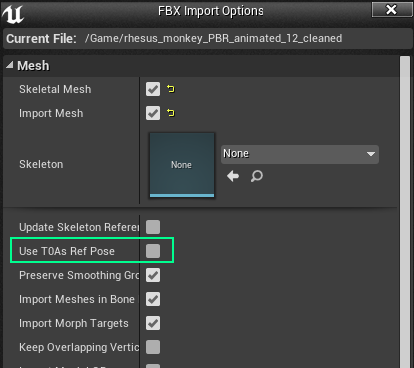
Retargeting
Troubleshoot UE Anim Retargeting
Auto-Rig Pro features UE settings to export correct bone names and axes for UE, but this is only the first half of the work. For best results, UE needs the imported character to have a very similar skeleton to the UE Mannequin skeleton.
When retargeting animations, UE will move and rotate the bones of the imported skeleton, so that they are close to the Mannequin skeleton. Then, if there are important differences in the location and rotation of bones, the animations will suffer from them.
Typical issues reside in spine and shoulder bones.
Below is the UE Quinn skeleton for reference. Notice the spine and shoulders shape:
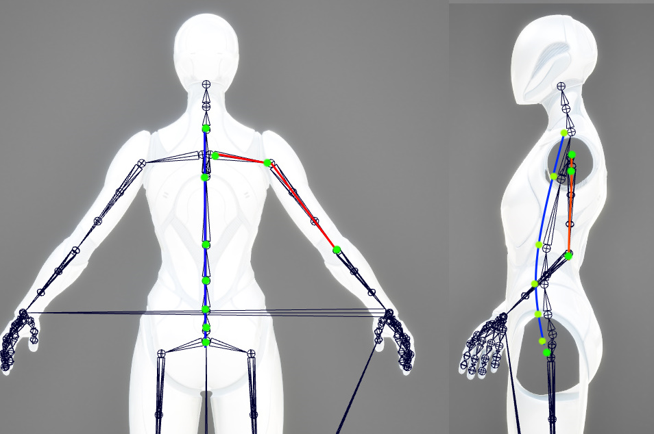
Now, the reference bones of our character look like this. We can see the spine and shoulders shapes are too far from the expected Quinn skeleton. So they must be corrected!
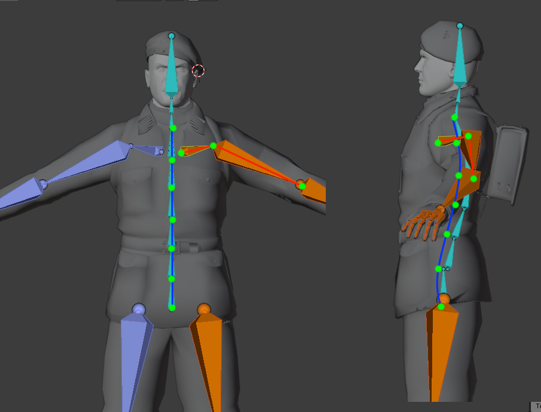
After re-shaping the reference bones, animations will work out right of the bat in UE, without unexpected distortions.
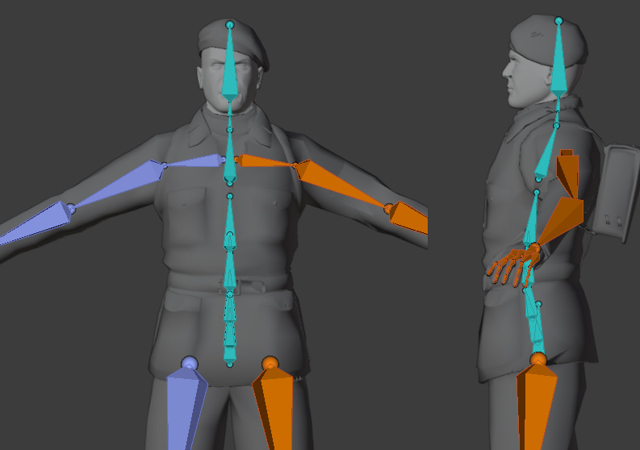
Important
The character may be modelled in a pose that is too far from the UE Mannequin. In that case, it’s best to reshape the model too.
Note
Alternatively, retargeting can be improved by adjusting the translation type in UE. See the chapter below.
Retargeting Translation Type
As mentioned above, animations will retarget fine in UE, only if the imported skeleton and the UE skeleton are very similar. If they are too different, try setting their translation type to Skeleton. That will help to reduce undesired distortions.
Display the retargeting options by clicking this in the bones tree:
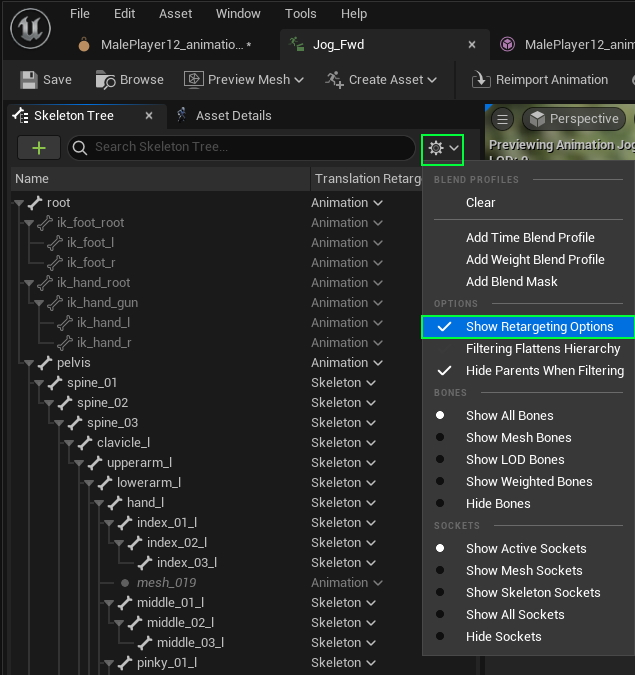
Then set to Skeleton this property:
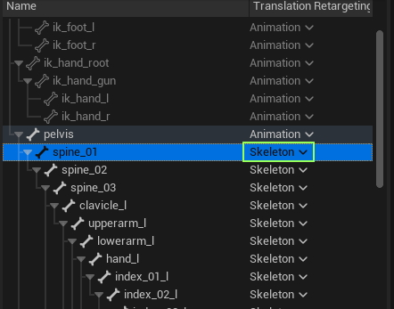
Rotation Offsets
Sometime, because of differences in the rest position of the source and target rig, or because the animation itself contains artefacts, it’s necessary to apply rotation offset over the retargetted animation for better results.
It’s especially true for the fingers. Here is how to fix wrong fingers rotations of the ThirdPersonRun included in UE:
Select and rotate the bones in the 3d viewport (animation window)
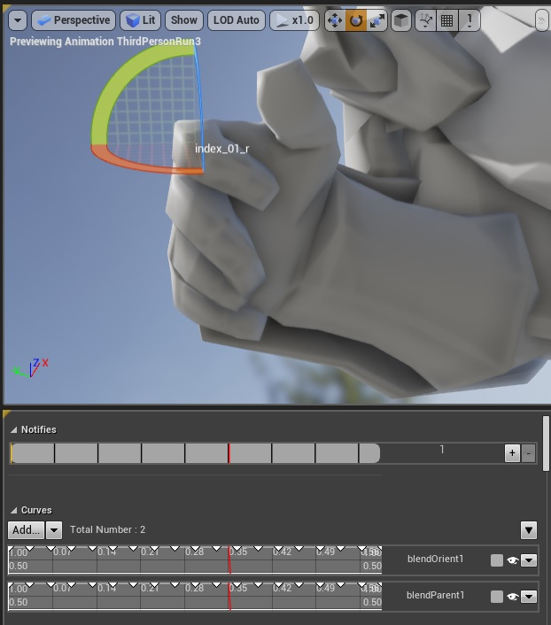
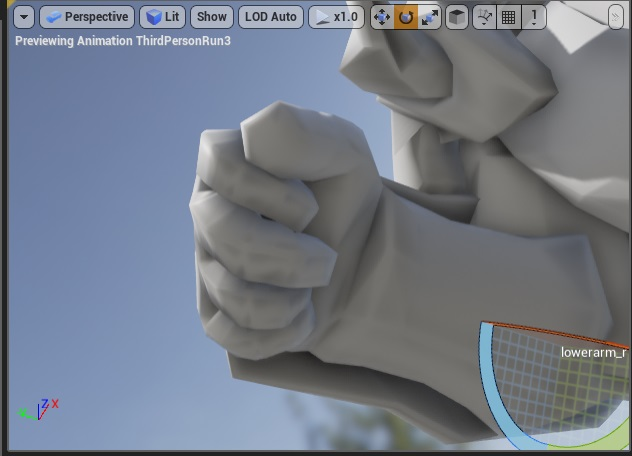
Select all the bones you’ve modified in the Skeleton Tree:
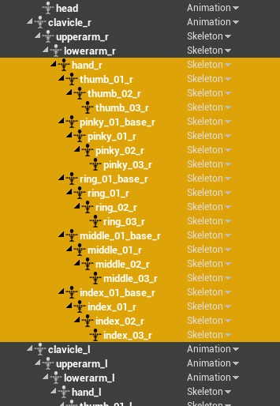
Click the Key cross button then the Apply button.
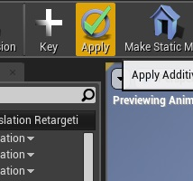
Save your asset and you’re done!
Control Rig
While there is no tool yet in Auto-Rig Pro that would generate a control rig in UE for any rigs, the UE default control rig can be attached to any humanoids skeletons easily. Here is a quick example in UE 5.4, the workflow may differ in more recent versions though.
Export the rigged character to FBX with UE Humanoid settings
In a third person UE project, import it as a Mannequin skeleton
Duplicate the default Control Rig asset
Open the duplicated Control Rig, and change the preview mesh to the imported character, save it
Animation editing and baking:
The control rig can now be dragged and dropped in the 3D viewport. The Sequencer window should automatically open after dropping it.
Click the + button next to the Animation track, to add an existing animation, for example a walk cycle
Mute the ControlRig track, then the animation should show and play without the control rig
To bake the animation to the control rig, right click the top control rig track > Bake to Control Rig > select the duplicated asset
Done, but it may be necessary to mute the animation track to show the baked animated control rig
Unity Tips
Humanoid System
Unity’s Humanoid rig comes in very handy when retargeting animations to multiple characters. However, there are certain drawbacks when compared to Generic rigs:
Does not support extra bones by default. For example, only the jaw and eye bones are supported as facial bones. To add more, extra steps are required using masks (see Unity documentation, forum).
No twist bones. Arms and legs twist bones are not natively supported, leading to poorer deformation when twisting arms/legs. However, they can be handled with additional code, plugins.
The skeleton is automatically set to a reference T-pose. This may lead to slight offsets in bones rotations.
Skin Weights
In Unity, the Skin Weights setting in the Quality panel defines the maximum number of deforming bones per vertex. This is useful to keep high realtime performances since too many deforming bones can slow down calculations. However, this may lead to bad deformations, if this value doesn’t match the number of deforming bones in the Blender rig. For example, if some vertices are deformed by 5 bones while the Unity limit is set to 2, this is going to lead to some serious deformation issues.
- If you’re concerned with in-game performances, then make sure to keep the Skin Weights value to 4 bones or less.
In Blender, ensure vertices have no more than 4 deforming bones. This can be automatically done with the Limit Total Vertex Groups setting. Then ensure deformations are still correct after this, and tweak weights if necessary.
If performances are not a deal breaker, set Skin Weights to Unlimited in Unity to ensures all weights are taken into account